Information Retrieval: Representations and Models
LIS 5043: Organization of Information
Model of Information Retrieval
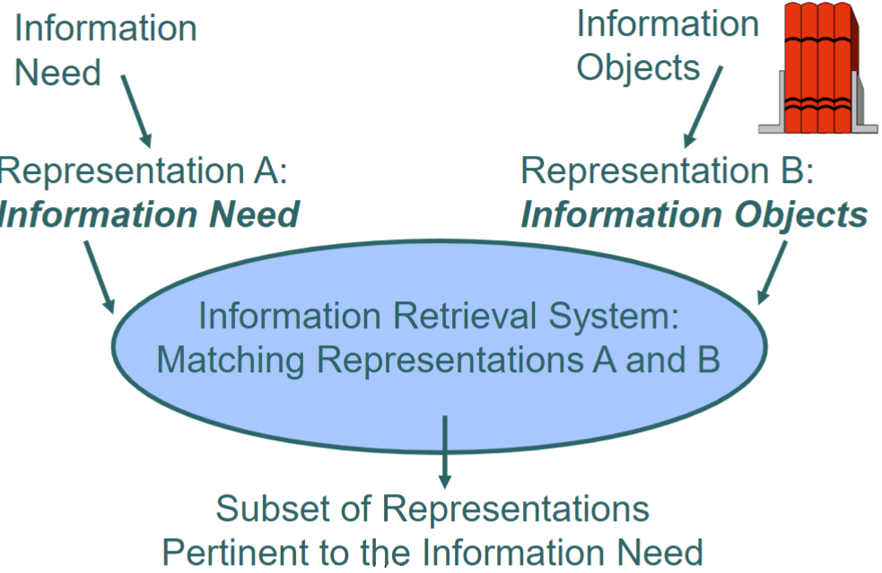Representation: Definition
A system for choosing or highlighting some characteristics (attributes), together with a specification of the rules for selection (codes)
This implies a trade-off: if some characteristics are highlighted, other characteristics are left behind
More Definitions
ENTITES: objects or conceptsATTRIBUTES: characteristics of entitiesDIACHRONIC: stable across timeSYNCHRONIC: changes across time
Human Indexing
- Diachronic Attributes (do not change)
- author, title, publisher, number of pages
- Only most general thought of users
- Rules not evident to users
- Great vagueness & Generality resting on a foundation of shiftiing quicksand
Requirements for Successful Retrieval

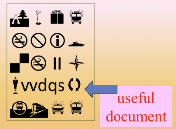
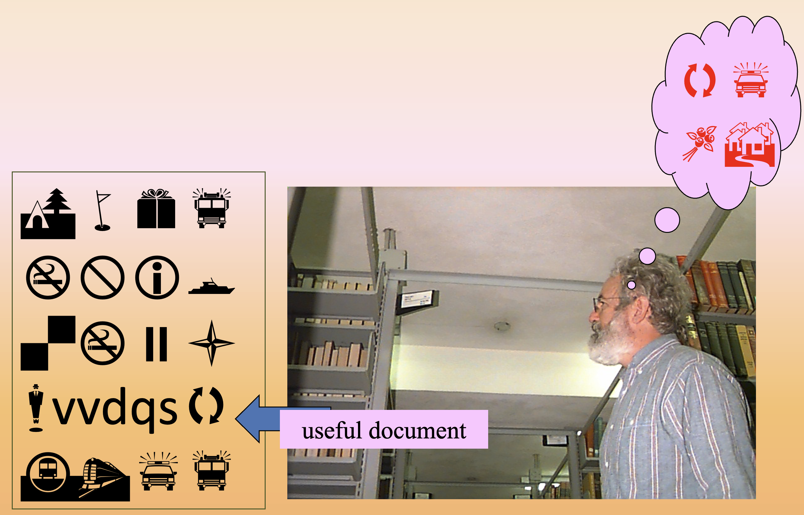
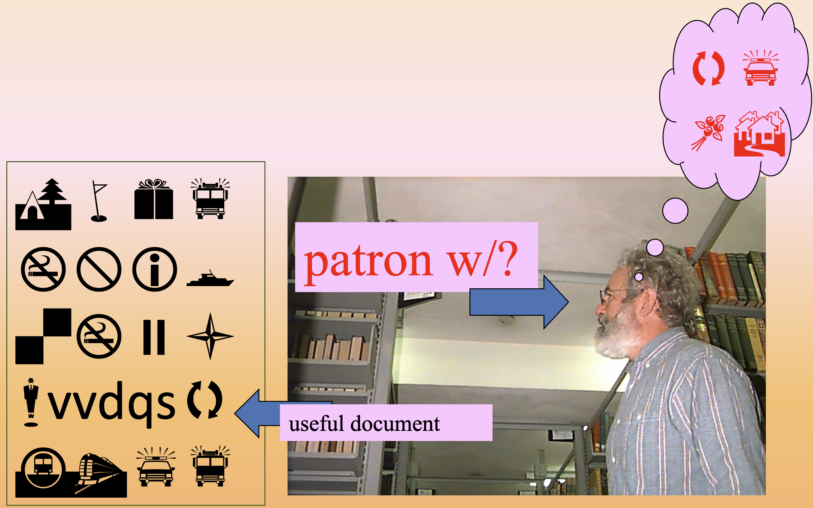
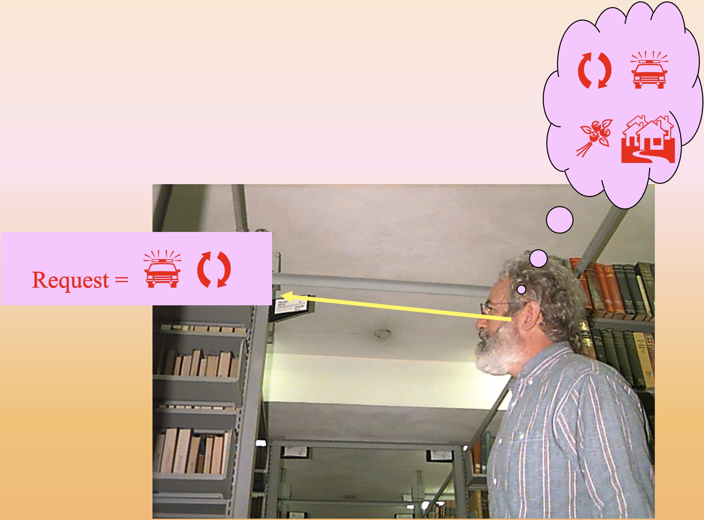
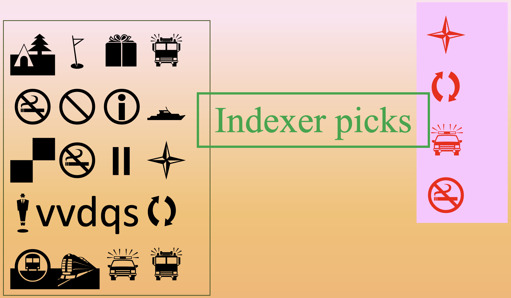
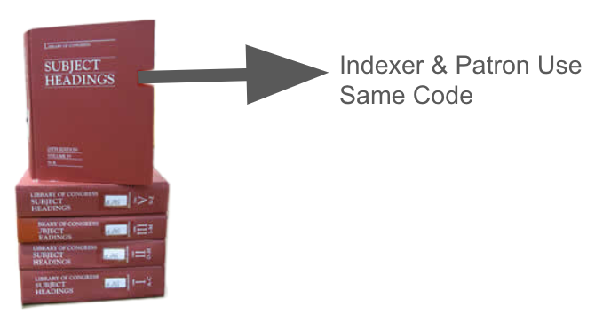
Indexer has selected (perhaps among others) the concept that the patrons will want
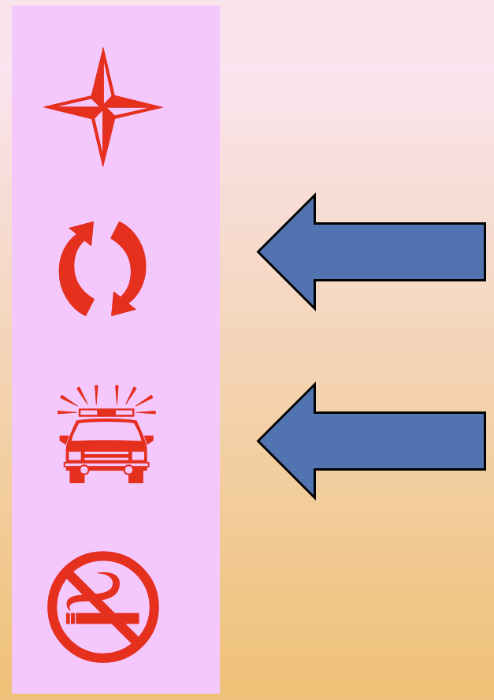

What If?
Indexer picks a different topicIndexer and patron use different terms for the same conceptPatrons cannot articulate just what the question state is
The Dance
Indexer
describes doc
predicts use
Patron
describes doc
predicts doc
Some Important Questions
What patron attributes can we know?What document attributes can we know?How can we use this knowledge to open the bottleneck between patrons in need and the documents that might be of use?
Indexing Factors Affecting IR Performance
- Indexing
- Type of Knowledge
- Effective/Cognitive
1.1 Consistency
1.2 Subject Expertise
1.3 Indexing Expertise
2.1 Searching Experience
2.2 Domain Knowledge
3.1 Motivation Level
3.2 Emotional State
Other Factors to Consider
Use of Standards/Rules (code)- Depends on form of index/abstract
- Depends on criteria of employer
- Pages allocated
- Format used
- Order
Depends on Resources/Audience
Information Retrieval
A process in which sets of records or documents are searched to find items which may help to satisfy the information need
IR is concerned with:
representationstorageorganizationaccessing of information objects
Information Retrieval (Cont.)
- Information retrieval concerns a range of concepts
User Group- types of knowledge
- context & information environment
Information NeedInformation SourcesInformation System- system capabilities/IR techniques used
- how information organized
Results of the QueryUser Selection & Evaluation (Relevance)
Information Retrieval (Cont.)
- The central problem of IR is how to represent documents for retrieval
- To be more successful, document representation must be used in ways similar to the ways ordinary language is used
- document representations should take context into account
- document representations should take users into account
Information Retrieval (Cont.)
Most IR is based on techniques introduced in the 1960's- Primarily text-based retrieval
- Makes use of inverted indexes and index terms
IR is no longer just a library problem- Used in businesses, everyday settings
- Used in search engines
As a result of these evolved uses high standards of retrieval are expected by users
Taxonomy of IR Techniques
We can divide IR techniques into basic classes- Exact Match: where the set of retrieved documents contains only documents whose representations match exactly with the query
- Partial Match: where there is some matching that occurs, but it is not exact, although some of the documents may be exact matches to the query
Traditional IR Model
Simple Match Model
Request = Information Data
Document A = data, information
Document B = data, information
Document C = information, retrieval
Advantages: simple process; widespread; familiar
Disadvantages: single descriptor requests less effective in large databases
Boolean IR Model
- Boolean Retrieval
- one step above the basic model
- Named after the creator, George Boole, of Boolean algebra, around 1850
- Most familiar IR technique used in OPAC’s and online databases
- Uses
AND,OR, andNOTto allow more complex queries to the IR system - Works with that what is called
Set Theory
Boolean IR Model (Cont.)
Example of Boolean Search
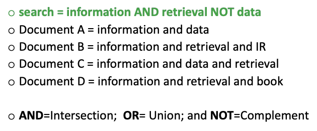
Problems with Boolean Model
- Need to know the order (preference) the operators are processed by the system
- Seems very simple to users but is really fairly complex
- May miss potentially relevant documents
- Does not rank retrieved documents
- Concepts within documents are difficult to show
- So why do we continue to use them?
Term Weighting
Weighted IR (probabilistic IR)- makes use of inverted index and index terms
- easier to assign weights if automatically indexed
- each term in the index has a weight or value attached to it
- weight reflects its relative importance in the document
- weight is determined by use of term frequency
- defined as the number of occurrences of a term in the document
- more frequently a term appears in a document, the more likely it is to an important concept within the document
Example of Weighted IR
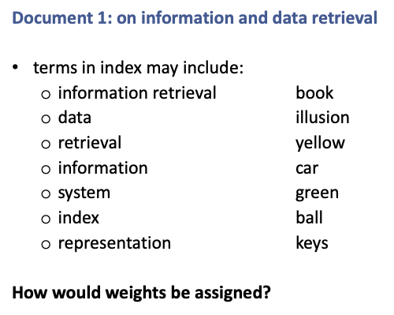Term Weighting (Cont.)
Other IR Models
Clustering (such as faceted search, tag clouds)
Clustering (Cont.)
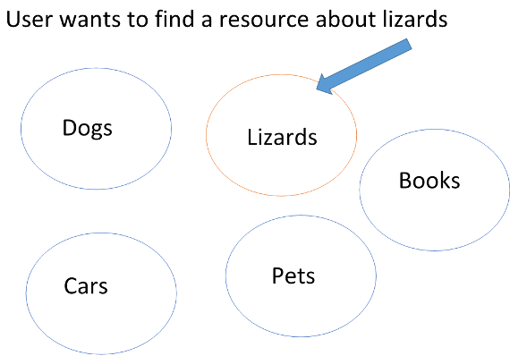Topic Modeling: Clustering Approach
Topic modeling itself is a soft clustering method but the output of topic modeling can be used for classification in downstream tasks such as information retrieval and improving recommendation systems
It is used to infer the hidden themes in a collection of documents and thus provides an automatic means to organize, understand and summarize large collections of textual information
It is based on statistical and machine learning techniques to mine meaningful information from a vast corpus of unstructured data and is used to mine document’s content
It infers abstract topics based on “similar patterns of word usage in each document”. These topics are simply groups of words from the collection of documents that represents the information in the collection in the best way
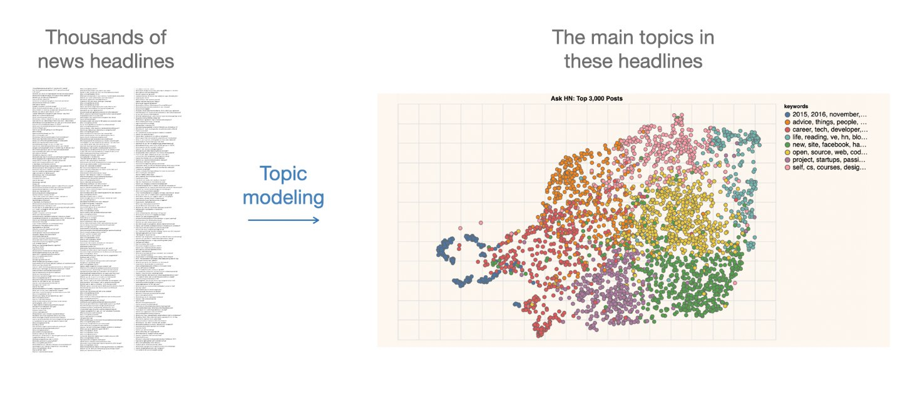
Other IR Models
Semantic or Linguistic Model
attempts to get at the “concepts” contained in the information object or the surrogate
syntactic analysis
free text searching
paragraph indexing
discourse analysis
Passage Retrieval
Newer IR Models
User Profiles
- uses heuristics (rules of thumb)
- uses process models
Intelligent Agents (e.g. Windows Cortana)
- autonomous
- able to learn
- customizable
Web Search Engines
Data Mining/Text Extraction Methods
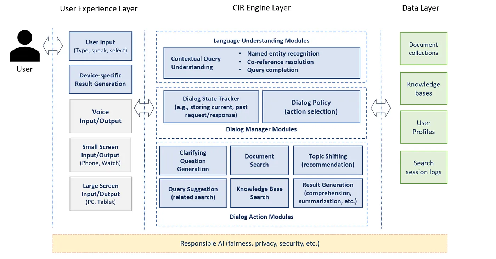
Retrieval-Augmented Generation (RAG)
Retrieval-Augmented Generation (RAG) = Information Retrieval (IR) + Large Language Models (LLMs)
RAG is a technique that helps AI models generate better, more accurate, and up-to-date responses by retrieving relevant information from external sources before generating an answer
Why Do We Need RAG?
Traditional LLMs (like GPT-4) have a fixed knowledge base from training data. But:
- They don’t know new information after training.
- They hallucinate (make up facts).
- They struggle with specific or niche knowledge (e.g., latest research papers).
- Solution: RAG helps by searching for relevant documents and using them to generate accurate answers!
How Does RAG Work?
Imagine you ask an AI:
🗣️ “Who won the Nobel Prize in Physics this year?”
Without RAG (LLM Only):
🤖 “I don’t know. My training data only goes up to 2023.”
With RAG (LLM + IR):
🤖 (Searches the web → Finds latest Nobel Prize winners → Summarizes the results)
“The 2024 Nobel Prize in Physics was awarded to [Winner’s Name] for [Reason].”
IR systems You Use
Online catalogs
Online databases
Web Search Engines
How Does this Relate to Searching?
Cautions
- We should take a more global view of IR
- Users (including information professionals) need to know which IR model or technique the system is using for retrieval
- Users also need to know how information systems are structured and how objects are represented in the system